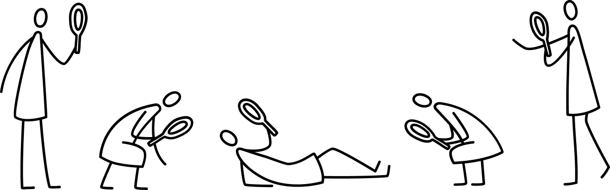
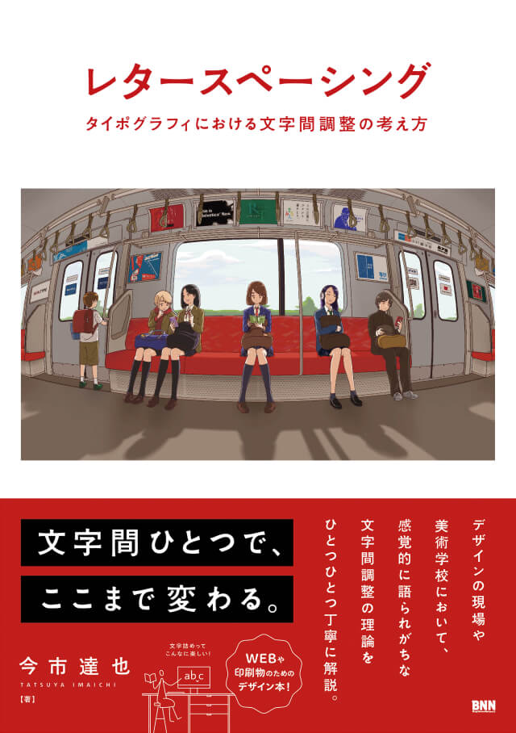

Concept
文字間ひとつで、
ここまで変わる。

文字間調整の感覚を鍛える教科書。
デザインの品質を大きく左右するにも関わらず、正解がなく、デザイナーを悩ませる「レタースペーシング（文字間調整・文字詰め）」。今まで感覚的に語られてきたレタースペーシングを、図と言葉と事例を用いて丁寧に解説した文字間調整の教科書。これからデザインを学ぶ学生の方や、自分のスペーシングを見直したいデザイナーの方に必須の一冊です。

第1部基本を学ぶ
レタースペーシングの
基礎知識や考え方
レタースペーシングとは？なぜスペーシングが重要なのかを理解し、具体的にどのような視点で文字間を見えていけばいいのかを解説します。


第2部知識を深める
欧文、和文・和欧混植
それぞれの特徴
言語ごとのスペーシングに対する特徴が学べます。欧文の歴史、和文の横組、和文と欧文を混ぜたときの留意点などを解説します。


第3部実感する
有名なロゴタイプの考察と
スペーシング練習問題
有名なロゴタイプのスペーシングを考察します。最後に練習問題を体験し、これまでに本書で学んだ知識を実践で振り返ります。

知りたいところだけサクッと読める見開き完結
目次Index
第1章 レタースペースとは何か？
- 1-1
- レタースペーシングのプロセス
- 1-2
- レタースペースの正体
- 1-3
- ワードスペースとの関係
- 1-4
- スペースの種類と関係性
- Column 01
- ワードスペースは存在しなかった？
第2章 スペーシングの基礎知識を学ぶ
- 2-1
- スペーシングの始めの一歩
- 2-2
- 文字の視覚的な中心を探す
- 2-3
- 文字の視覚的な端を探す
- 2-4
- 文字のパーソナルスペース
- 2-5
- 読み手の感覚差を知る
- 2-6
- 3文字スペーシング方法のまとめ
- 2-7
- 4文字以上の単語への発展
- 2-8
- 客観視のコツ
- Column 02
- 行頭揃えのコツをつかむ
第3章 スペーシングの観察眼を鍛える
- 3-1
- 文字の形状を知る
- 3-2
- 文字列を「模様」として考える
- 3-3
- 同じ文字並びの扱い方
- 3-4
- 文字の上部と下部の違い
- 3-5
- 文字の量感・圧迫感を考慮する
- 3-6
- ウェイトの変化による影響
- 3-7
- 文字サイズの違いによる影響
- 3-8
- 背景色の変化による影響
- 3-9
- 文字の周辺のスペースが与える影響
- 3-10
- ゆったりさと窮屈さの特徴と違い
- Column 03
- 漢数字の「一」はどこまで詰める？
第4章 欧文のスペーシング
- 4-1
- 大文字で意識すべきこと
- 4-2
- 小文字で意識すべきこと
- 4-3
- 書体のスタイルとスペースの関係
- 4-4
- スクリプト体のスペーシング
- 4-5
- いろいろな合字
- Column 04
- ピリオドと句点のスペーシング
第5章 和文のスペーシング
- 5-1
- ひらがな活字の特徴
- 5-2
- 縦組みと横組みのひらがな
- 5-3
- 和文を読むときの感覚
- 5-4
- 和文特有の文字の高さ
- 5-5
- 和文独自の黒みのムラ
- 5-6
- 難しい和文横組みのスペーシング
- 5-7
- 和文がスカスカする原因
- 5-8
- 横組みを配慮したフォント
- 5-9
- 小書き文字のスペーシング
- 5-10
- センテンスのスペーシング
- 5-11
- 縦組みのスペーシング
- Column 05
- 括弧のスペーシング
第6章 和欧混植のスペーシング
- 6-1
- 和欧混植とは
- 6-2
- 最適な文字サイズとスペースライン
- 6-3
- 既存フォントの観察
- 6-4
- ワードスペースの影響
- 6-5
- トラッキング時の注意点
- 6-6
- 文字の比率調整による効果
- Column 06
- 従属欧文（専用欧文）のはなし
第7章 実例から見るスペーシング
- 7-1
- COACHのロゴタイプ
- 7-2
- BVLGARIのロゴタイプ
- 7-3
- HIBIKIのロゴタイプ
- 7-4
- MEVIUSのロゴタイプ
- 7-5
- TORAYAのロゴタイプ
- 7-6
- CHITAのロゴタイプ
- 7-7
- キユーピーマヨネーズのロゴタイプ
- 7-8
- 明治おいしい牛乳のロゴタイプ
- Column 07
- 世の中のロゴタイプを考察しよう！
第8章 スペーシングの練習問題集
- 8-1
- 図形のスペーシングに挑戦
- 8-2
- 欧文のスペーシングに挑戦
- 8-3
- 和文のスペーシングに挑戦
- 8-4
- 和欧混植のスペーシングに挑戦
- Column 08
- 便利なことはこわいこと
